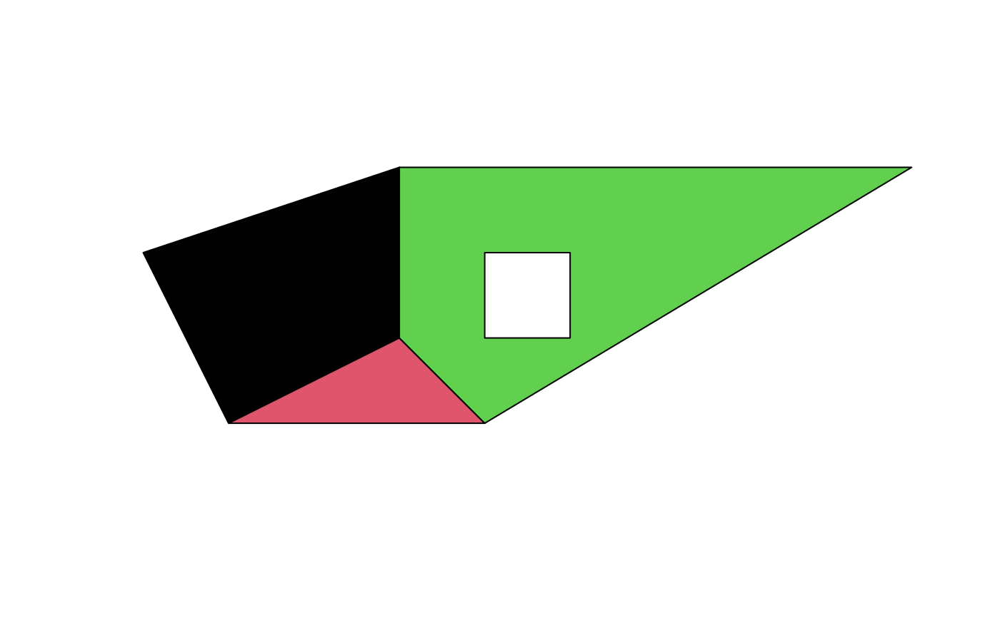
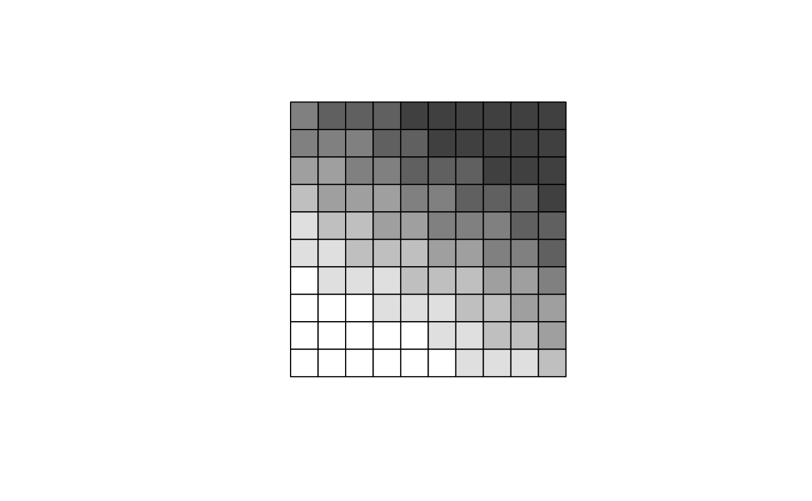

SpatialPolygonsDataFrame-class.Rdclass to hold polygons with attributes
Objects can be created by calls to the function SpatialPolygonsDataFrame
data:Object of class "data.frame"; attribute table
polygons:Object of class "list"; see SpatialPolygons-class
plotOrder:Object of class "integer"; see SpatialPolygons-class
bbox:Object of class "matrix"; see Spatial-class
proj4string:Object of class "CRS"; see CRS-class
Class "SpatialPolygons", directly.
Class "Spatial", by class "SpatialPolygons".
Methods defined with class "SpatialPolygonsDataFrame" in the signature:
signature(x = "SpatialPolygonsDataFrame"): select subset of (sets of) polygons; NAs are not permitted in the row index
signature(object = "SpatialPolygonsDataFrame"):
rbind-like method, see notes below
SpatialPolygonsDataFrame with default ID matching checks the data frame row names against the Polygons ID slots. They must then agree with each other, and be unique (no Polygons objects can share IDs); the data frame rows will be re-ordered if needed to match the Polygons IDs..
If you want to rbind objects with
duplicated IDs, seespChFIDs.
# simple example, from scratch:
Sr1 = Polygon(cbind(c(2,4,4,1,2),c(2,3,5,4,2)))
Sr2 = Polygon(cbind(c(5,4,2,5),c(2,3,2,2)))
Sr3 = Polygon(cbind(c(4,4,5,10,4),c(5,3,2,5,5)))
Sr4 = Polygon(cbind(c(5,6,6,5,5),c(4,4,3,3,4)), hole = TRUE)
Srs1 = Polygons(list(Sr1), "s1")
Srs2 = Polygons(list(Sr2), "s2")
Srs3 = Polygons(list(Sr3, Sr4), "s3/4")
SpP = SpatialPolygons(list(Srs1,Srs2,Srs3), 1:3)
plot(SpP, col = 1:3, pbg="white")

grd <- GridTopology(c(1,1), c(1,1), c(10,10))
polys <- as(grd, "SpatialPolygons")
centroids <- coordinates(polys)
x <- centroids[,1]
y <- centroids[,2]
z <- 1.4 + 0.1*x + 0.2*y + 0.002*x*x
ex_1.7 <- SpatialPolygonsDataFrame(polys,
data=data.frame(x=x, y=y, z=z, row.names=row.names(polys)))
brks <- quantile(z, seq(0,1,1/7))
cols <- grey((length(brks):2)/length(brks))
dens <- (2:length(brks))*3
plot(ex_1.7, col=cols[findInterval(z, brks, all.inside=TRUE)])

plot(ex_1.7, density=dens[findInterval(z, brks, all.inside=TRUE)])